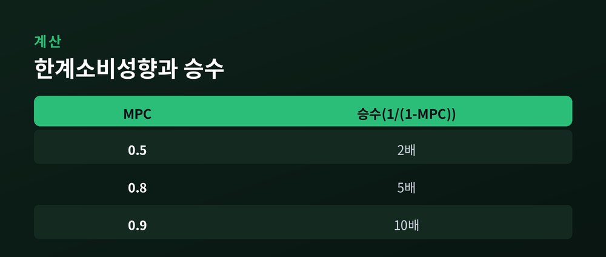
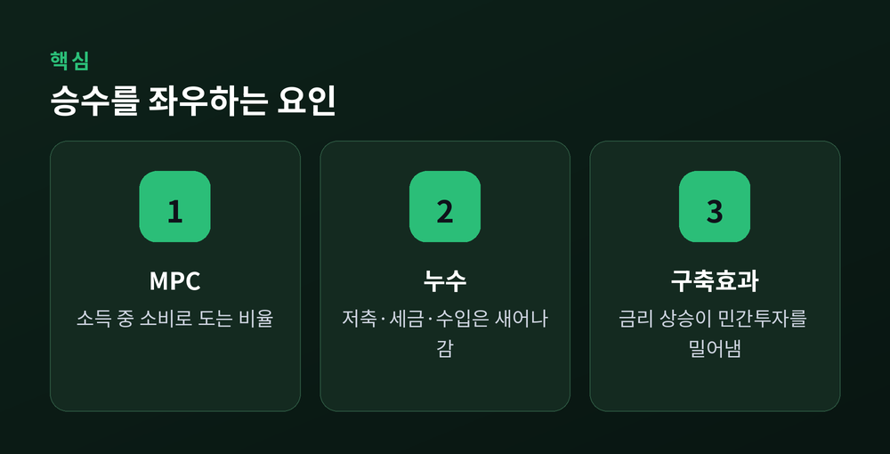

이번 글에서는 경제 뉴스에 자주 등장하는 "승수효과"를 정리해 보겠습니다. 정부가 100을 쓰면 국민소득은 왜 100보다 더 늘어난다고 말하는지, 그 계산의 뼈대가 되는 한계소비성향(MPC)과 공식 1/(1-MPC)을 숫자로 풀어보고, 승수가 이론만큼 크게 작동하지 않는 이유까지 함께 살펴보겠습니다.
정부 지출이나 투자처럼 경제 바깥에서 주어지는 지출이 한 단위 늘어날 때, 국민소득이 그보다 더 큰 폭으로 늘어나는 현상을 승수효과라고 합니다.
정부가 도로 공사에 100억 원을 지출한다고 가정해 보겠습니다. 이 돈은 건설사와 노동자의 소득이 됩니다. 이들은 늘어난 소득 중 일부를 다시 씁니다. 그 소비는 또 다른 누군가의 소득이 되고, 그 사람은 다시 일부를 소비합니다.
이 연쇄가 한 번으로 끝나지 않는다는 점이 핵심입니다. 정부 지출 100억 원이 경제를 한 바퀴만 돌고 멈추는 게 아니라, 여러 바퀴를 돌며 소득을 계속 만들어낸다는 뜻입니다. 그래서 정부지출 승수는 1보다 큰 값으로 설명되는 경우가 많습니다.
이 연쇄가 어디서 멈추는지를 결정하는 변수가 한계소비성향, 줄여서 MPC입니다.
MPC는 소득이 추가로 1만큼 늘었을 때, 그중 소비로 쓰이는 비율을 말합니다. 소득 100이 늘었는데 그중 80을 쓴다면 MPC는 0.8인 셈입니다. 나머지 20은 저축으로 남으니, MPC와 한계저축성향(MPS)을 더하면 항상 1이 됩니다.
정부지출 승수의 공식은 이렇습니다.
승수 = 1 / (1 - MPC)
MPC가 0.8이라면 승수는 1/(1-0.8), 즉 1/0.2로 5가 됩니다. 정부가 100을 쓰면 국민소득은 이론상 500까지 늘어날 수 있다는 계산입니다.
숫자로 다시 확인해 보겠습니다. 정부가 100을 쓰면, 이를 받은 사람이 MPC 0.8만큼인 80을 다시 씁니다. 그 80을 받은 사람은 다시 80의 80퍼센트인 64를 씁니다. 다음은 64의 80퍼센트인 51.2입니다. 이렇게 점점 줄어드는 금액이 무한히 더해지는데, 그 합을 등비급수 공식으로 계산하면 정확히 500이 나옵니다. 공식 1/(1-MPC)은 이 무한한 덧셈을 한 번에 정리해 주는 셈입니다.
MPC가 얼마냐에 따라 승수는 크게 벌어집니다. 아래 표로 정리해 보겠습니다.

MPC가 0.5라면 승수는 2배에 그칩니다. MPC가 0.9로 올라가면 승수는 10배까지 뛰어오릅니다. 같은 100억 원을 쓰더라도, 그 돈을 받은 사람들이 얼마나 다시 쓰느냐에 따라 최종적으로 국민소득에 미치는 효과는 몇 배씩 차이가 난다는 뜻입니다.
일반적으로 저소득층은 소득 대비 소비 비중이 높아 MPC가 크게 나타나는 경향이 있습니다. 그래서 저소득층을 겨냥한 지원이 상대적으로 승수 효과가 크다는 설명도 여기서 나옵니다.
세금을 깎아주는 감세 정책도 비슷한 논리로 설명되지만, 승수의 크기는 다릅니다. 조세승수는 -MPC/(1-MPC)로, 같은 MPC 값이라도 정부지출 승수보다 항상 작습니다. 세금을 돌려받은 돈의 일부는 곧바로 저축으로 빠지기 때문입니다. 다만 정부지출을 늘리면서 동시에 같은 금액만큼 세금도 걷는 "균형재정" 방식이라면, MPC 값과 무관하게 국민소득은 정확히 그 지출액만큼 늘어난다는 결과가 나옵니다.
지금까지의 계산은 이론상 최댓값에 가깝습니다. 실제로는 승수를 깎아먹는 요인이 여럿 있습니다.

첫째는 누수입니다. 소득이 늘어도 전부 국내 소비로 돌지 않습니다. 저축으로 빠지고, 세금으로 걷히고, 해외 제품을 사는 데 쓰이기도 합니다. 특히 수입 의존도가 높은 경제일수록 소득의 일부가 해외로 새어나가 국내 승수 효과를 그만큼 줄입니다. 자원이 부족해 수입 비중이 높은 나라는, 같은 정책을 펴도 승수가 상대적으로 작게 나타날 수 있다는 뜻입니다.
둘째는 구축효과입니다. 정부가 지출 재원을 마련하려고 국채를 발행해 돈을 빌리면, 시중 자금 수요가 늘어 금리가 오를 수 있습니다. 금리가 오르면 기업의 투자와 가계의 대출성 지출이 위축됩니다. 정부 지출이 늘어난 만큼 민간 투자가 줄어드는 셈이라, 순수한 총수요 증가분은 단순 계산보다 작아집니다.
구축효과의 크기는 경기 국면에 따라 달라집니다.
불황기에는 놀고 있는 공장과 인력이 많고 금리도 이미 낮은 상태입니다. 이런 상황에서는 정부 지출이 민간 자금 수요와 크게 부딪히지 않아 구축효과가 작고, 승수 효과가 상대적으로 크게 나타나는 경향이 있습니다. 반대로 완전고용에 가까운 호황기에는 정부의 차입이 민간의 자금 수요와 곧바로 경쟁하게 됩니다. 구축효과가 커지고, 순수한 경기부양 효과는 이론값보다 작아지거나 거의 사라질 수 있습니다.
이 지점에서 승수의 실제 크기를 둘러싼 실증 논쟁도 짚고 넘어가야 합니다. 국제통화기금의 관련 연구와 여러 학술 추정치를 종합하면 정부지출 승수는 대체로 0.5에서 2.0 사이에 분포하고, 불황기 공공투자 성격의 지출이 상단에, 고소득층 대상 감세가 하단에 가깝다고 설명됩니다. 한 연구는 확장기에는 승수가 거의 0에 가깝고, 불황기에는 3에 이른다는 결과를 내놓기도 했습니다. 불황기 승수가 더 크게 나타나는 이유는 앞서 본 구축효과와 같은 맥락입니다. 유휴 생산요소가 많아 정부지출이 민간 자원을 밀어내지 않고, 소득이 줄어도 빚으로 메우기 어려운 가계일수록 정부의 이전지출에 더 크게 반응하기 때문입니다.
다만 모든 경제학자가 같은 결론에 동의하는 것은 아닙니다. 2009년 미국의 대규모 경기부양책 논쟁에서 한 경제학자는 평시 승수가 사실상 0에 가깝다고 주장했습니다. 정부가 빚을 내 지출을 늘리면 민간 투자자들이 훗날의 증세를 예상해 스스로 지출을 줄인다는 논리였습니다. 반대편에서는 그 근거가 통제경제에 가까웠던 2차대전 시기 자료에 지나치게 기대고 있다고 반박하며, 불황기만큼은 정부 지출로 총수요를 지지해야 한다고 맞섰습니다. 시계열 데이터를 분석한 다른 연구는 정부지출 승수가 1에 못 미치는 경우가 많다고 보고하기도 했습니다. "승수는 항상 크게, 확실하게 작동한다"는 말은 지나친 단순화인 셈입니다.
지출의 종류에 따라서도 승수는 갈립니다. 도로나 항만 같은 정부구매성 지출은 승수가 상대적으로 크게 추정되고, 현금성 이전지출은 그보다 작게 추정되는 연구 결과도 있습니다. 같은 예산이라도 어디에 쓰느냐에 따라 국민소득에 미치는 효과가 달라질 수 있다는 뜻입니다.
마지막으로 한 가지만 덧붙이겠습니다.
승수효과는 정부 지출 1원이 그 이상의 국민소득을 만들 수 있다는 것을 보여주는 유용한 틀입니다. 하지만 그 크기는 한계소비성향뿐 아니라 누수, 구축효과, 경기 국면에 따라 계속 달라집니다.
"승수는 고정된 숫자가 아니라 조건에 따라 움직이는 값입니다."
정부 지출이 소득을 몇 배로 늘리느냐고 묻는다면, 정답은 하나의 숫자가 아니라 "그때그때 다르다"에 가까울 것입니다.